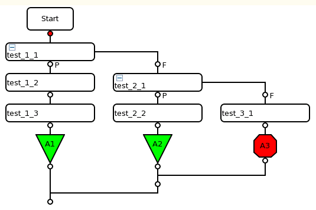
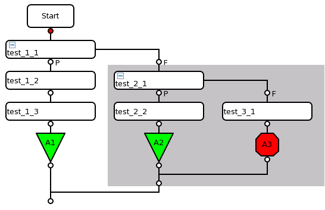

Hierarchy within a testflow
By inserting a branching node - for example run and branch and if ... then - in your testflow, you create two separate paths. Each of these paths represents a separate level of your testflow.
When selecting, cutting, copying and pasting nodes the software will not allow you to perform any actions that involve nodes from more than one level.
Example
In the testflow shown below, there are three distinct levels. If you select either of the test suite nodes, all nodes in all levels stemming from this node are also selected.

The figure below shows the effect of selecting node test_2_1; the nodes which branches from test_2_1 are also selected. Similarly, you cannot select more than one node from different levels; you can, however, select more than one node within the same level. For example, you could select test_1_2 and test_1_3, but not test_1_2 and test_2_2 or test_3_1.

Functional changes
- Introduced before SmarTest 6.3.2